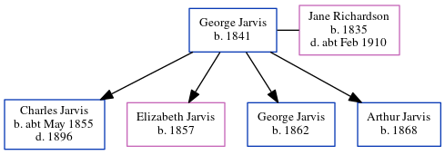

George Jarvis 1841 -
[ Home ] | [ Calendar ] | [ Surnames Index ] | [ Census Index ] | [ Family History ]George Jarvis was born in Berkshire, England in 18411 and had 4 children with Jane Richardson: Charles George, Elizabeth Jane, George and Arthur. On Apr 2, 1871, he was living at Europa Cottage, Church Road, Battersea, London, England1.
Children
- Charles George was born c. May 1855
- Elizabeth Jane was born in 1857
- George was born in 1862
- Arthur was born in 1868
Citations
- 1871 England, Wales & Scotland Census - Findmypast (was age 30 and the head of the household)
Family Tree
Generated by ged2site. Last updated on Jun 11, 2024